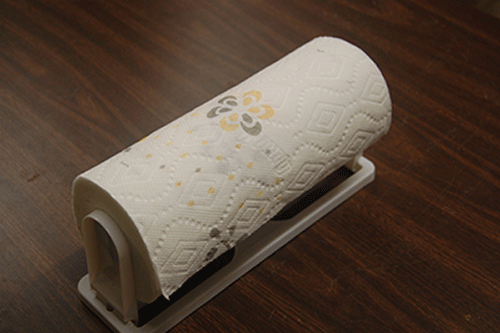
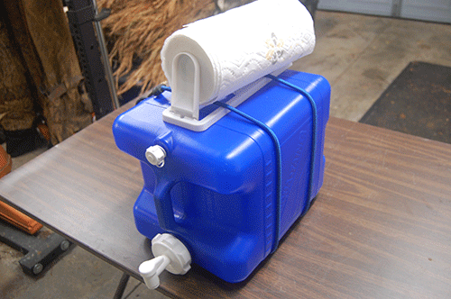
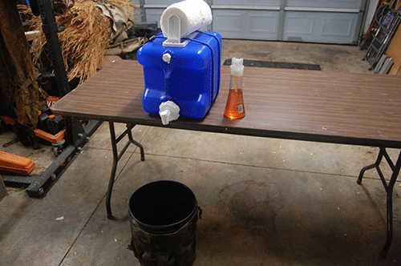

Hand Washing Station
What you'll Do:
Step 1: PLace paper towels in the paper towel holder

Step 2: Lay the paper towel holder flat on top of the water jug. Attach by wrapping the bungie cords around the water jug.

Step 3: Position the water jug, along with the soap and empty bucket, at the edge of a table or bench. Place the empty bucket under the spigot. Your portable wash station is now complete!
